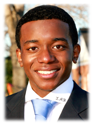

Welcome!
President's Message
2014-2015
"As president of the North Carolina Comprehensive Community College Student Government Association(N4CSGA), I would like to welcome and thank you for visiting this website. The N4CSGA is a student lead organization that serves as a voice for the more than 850,000 students within the North Carolina Community College System.

We are a thriving organization composed of student leaders from the fifty-eight community colleges in North Carolina. I am excited about the great things that will take place this year. The executive board and I have been
working indefatigably to ensure that every event, project,division meeting, conference, etc., will be the best it’s ever been. We’re making it clear; this will be the best year! We hope to accomplish the following goals:
- Organization goals
- Educate and engage students about issues that affect the community college system, prior to conference.
- Inform students about the value of the N4CSGA; encourage attendance while seeking ways to strengthen the organization
- Seek for more school input on executive board decisions
- Host workshops that educate and empower
- Increase legislative presence
Best regards,
La'Quon Rogers
President - N4CSGA